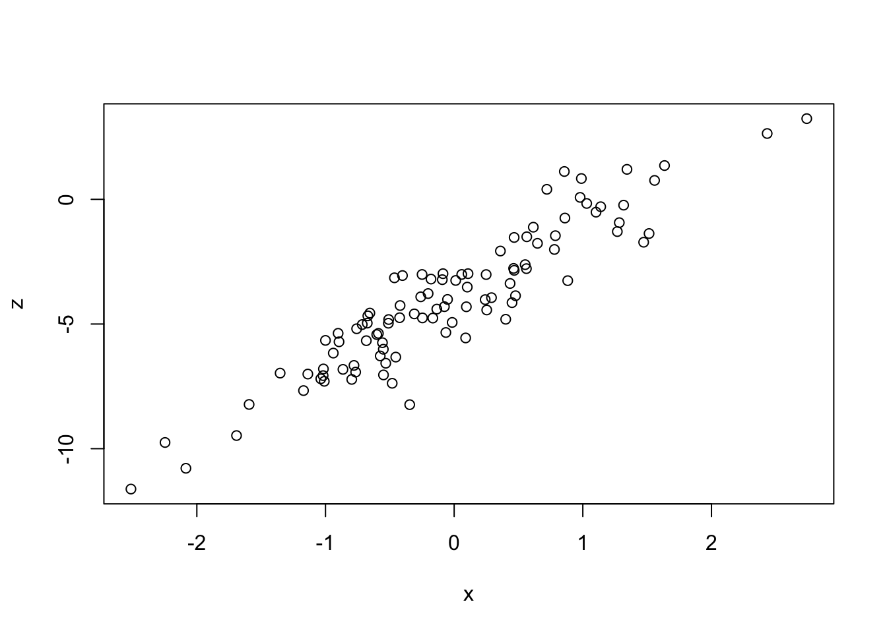
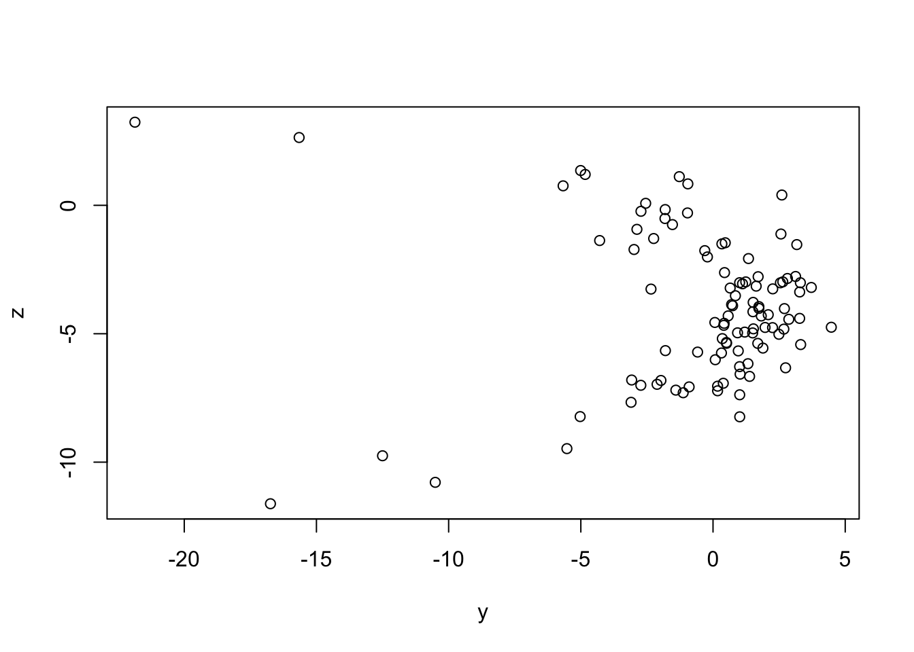
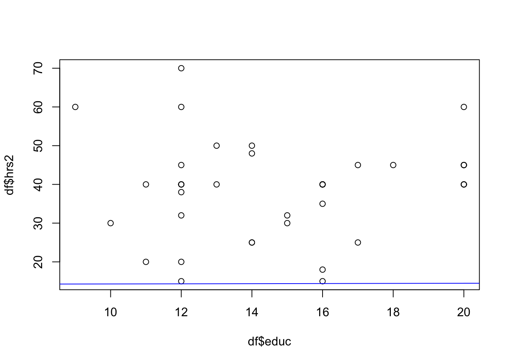
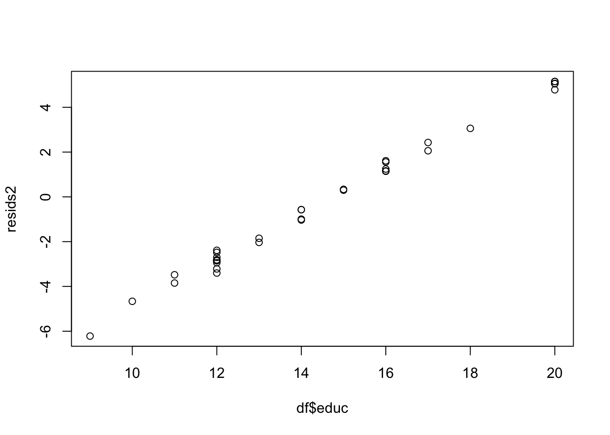
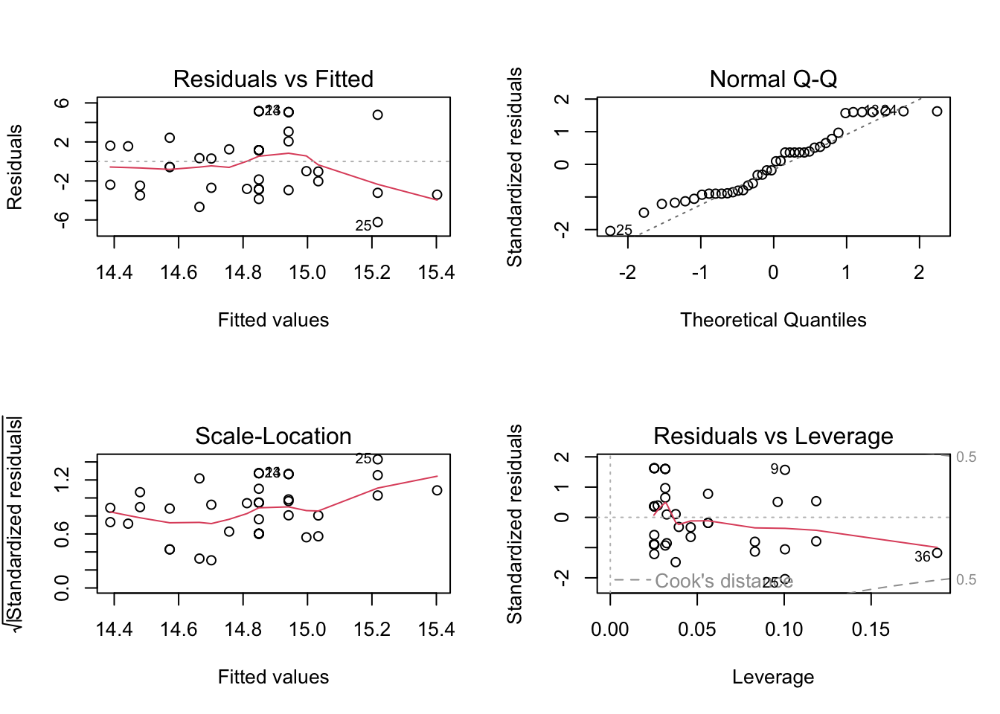
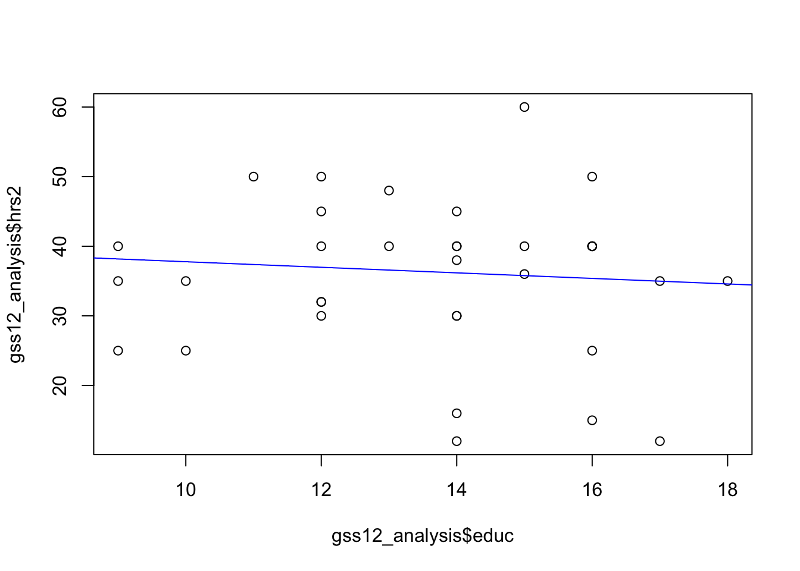
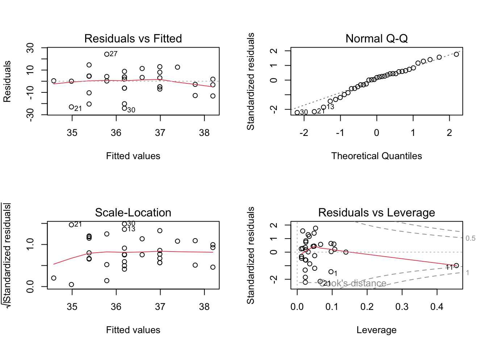

plot(x, y)
cor(x, y)[1] -0.09107752Bivariate regression analysis (part b)
This week we focus on the General Social Survey data, or GSS.
This data is located in the gssr package in R (see part III). You should become very familiar with the GSS data. Please explore the website as we will be prioritizing the use of the GSS data for the remainder of our course.
The use of the GSS data will allow us to consider the meaning of social justice in the context of attitudes and beliefs around social issues.
Let us begin with a set of three variables: \(x\), \(y\), and \(z\).
We will assume that there is a hypothesized association between all three variables.
Let us take a look at the scatterplots between each pair of variables.
plot(x, y)
cor(x, y)[1] -0.09107752Take note of the value of the correlation coefficient.
Let us take a look at the scatterplots between each pair of variables.
plot(x, z)
cor(x, z)[1] 0.9284953Take note of the value of the correlation coefficient.
Let us take a look at the scatterplots between each pair of variables.
plot(y, z)
cor(y, z)[1] -0.04660941Take note of the value of the correlation coefficient.
In our previous lectures, we have discussed the function of assumptions and principles in regression analysis. In progressing towards different types of tests, it is important to consider the specific assumptions for any given test.
Analyzing relationships among social science variables has an assumptions of linearity. However, this assumptions is not always correct. The adoption of this assumption is based on a host of factors. Most notably, that many relationships have been found to be linear when considered in the empirical sense.
Some additional assumptions are as follows:
The sample is representative of the population
The variables of interest are normally distributed
There are no outliers in the data
Independence
There is a linear relationship between the independent variable(s) and dependent variable(s)
summary(ols <- lm(y ~ x + z))
Call:
lm(formula = y ~ x + z)
Residuals:
Min 1Q Median 3Q Max
-20.0086 -0.9862 1.0883 2.4747 4.6472
Coefficients:
Estimate Std. Error t value Pr(>|t|)
(Intercept) 1.0975 1.6178 0.678 0.499
x -1.5588 1.2180 -1.280 0.204
z 0.4069 0.4004 1.016 0.312
Residual standard error: 4.192 on 97 degrees of freedom
Multiple R-squared: 0.01874, Adjusted R-squared: -0.00149
F-statistic: 0.9264 on 2 and 97 DF, p-value: 0.3995We will run through a sample analysis using the gssr package.
# install packages
install.packages("remotes", repos = "http://cran.us.r-project.org")
install.packages("tidyverse", repos = "http://cran.us.r-project.org")
install.packages("tidyr", repos = "http://cran.us.r-project.org")
# load gssr package
remotes::install_github("kjhealy/gssr")
# load libraries
library(gssr)
library(dplyr)
library(tidyr)# load the master documentation files
data(gss_all) # note that this is a large file of all GSS data
data(gss_doc) # this is the documentation for the GSS data# use the dictionary to get information in a different format
data(gss_dict)
gss_dict# A tibble: 2,469 × 6
pos variable label col_type value_labels years
<int> <chr> <chr> <chr> <chr> <list>
1 1 wrkstat labor force status dbl+lbl [1] working… <tibble>
2 2 hrs1 number of hours worked last we… dbl+lbl [89] 80+ ho… <tibble>
3 3 hrs2 number of hours usually work a… dbl+lbl [89] 80+ ho… <tibble>
4 4 evwork ever work as long as one year dbl+lbl [1] yes; [2… <tibble>
5 5 wrkslf r self-emp or works for somebo… dbl+lbl [1] self-em… <tibble>
6 6 wrkgovt govt or private employee dbl+lbl [1] governm… <tibble>
7 7 indus80 r's industry code (1980) dbl+lbl [1] strongl… <tibble>
8 8 occ10 r's census occupation code (20… dbl+lbl [10] chief … <tibble>
9 9 indus10 r's industry code (naics 2007) dbl+lbl [170] crop … <tibble>
10 10 marital marital status dbl+lbl [1] married… <tibble>
# ℹ 2,459 more rowsgss_dict %>%
filter(variable == "race")# A tibble: 1 × 6
pos variable label col_type value_labels years
<int> <chr> <chr> <chr> <chr> <list>
1 71 race race of respondent dbl+lbl [1] white; [2] black; [3]… <tibble>gss_dict %>%
filter(variable == "sex")# A tibble: 1 × 6
pos variable label col_type value_labels years
<int> <chr> <chr> <chr> <chr> <list>
1 70 sex respondents sex dbl+lbl [1] male; [2] female <tibble [33 × 2]>gss_dict %>%
filter(variable == "hrs2")# A tibble: 1 × 6
pos variable label col_type value_labels years
<int> <chr> <chr> <chr> <chr> <list>
1 3 hrs2 number of hours usually work a … dbl+lbl [89] 80+ ho… <tibble>gss_dict %>%
filter(variable == "educ")# A tibble: 1 × 6
pos variable label col_type value_labels years
<int> <chr> <chr> <chr> <chr> <list>
1 39 educ highest year of school completed dbl+lbl [0] no form… <tibble># view information on a specific variable
gss_doc %>% filter(id == "race") %>%
select(id, description, text)# A tibble: 1 × 3
id description text
<chr> <chr> <chr>
1 race Race of respondent 24. What race do you consider yourself?gss_doc %>% filter(id == "sex") %>%
select(id, description, text)# A tibble: 1 × 3
id description text
<chr> <chr> <chr>
1 sex Respondents sex 23. Code respondent's sexgss_doc %>% filter(id == "hrs2") %>%
select(id, description, text)# A tibble: 1 × 3
id description text
<chr> <chr> <chr>
1 hrs2 Number of hours usually work a week 1b. If with a job, but not at work:…gss_doc %>% filter(id == "educ") %>%
select(id, description, text)# A tibble: 1 × 3
id description text
<chr> <chr> <chr>
1 educ Highest year of school completed 15. What is the highest grade in eleme…# check which years your variables are available
gss_which_years(gss_all, race)# A tibble: 33 × 2
year race
<dbl> <lgl>
1 1972 TRUE
2 1973 TRUE
3 1974 TRUE
4 1975 TRUE
5 1976 TRUE
6 1977 TRUE
7 1978 TRUE
8 1980 TRUE
9 1982 TRUE
10 1983 TRUE
# ℹ 23 more rowsgss_which_years(gss_all, sex)# A tibble: 33 × 2
year sex
<dbl> <lgl>
1 1972 TRUE
2 1973 TRUE
3 1974 TRUE
4 1975 TRUE
5 1976 TRUE
6 1977 TRUE
7 1978 TRUE
8 1980 TRUE
9 1982 TRUE
10 1983 TRUE
# ℹ 23 more rowsgss_which_years(gss_all, hrs2)# A tibble: 33 × 2
year hrs2
<dbl> <lgl>
1 1972 FALSE
2 1973 TRUE
3 1974 TRUE
4 1975 TRUE
5 1976 TRUE
6 1977 TRUE
7 1978 TRUE
8 1980 TRUE
9 1982 TRUE
10 1983 TRUE
# ℹ 23 more rowsgss_which_years(gss_all, educ)# A tibble: 33 × 2
year educ
<dbl> <lgl>
1 1972 TRUE
2 1973 TRUE
3 1974 TRUE
4 1975 TRUE
5 1976 TRUE
6 1977 TRUE
7 1978 TRUE
8 1980 TRUE
9 1982 TRUE
10 1983 TRUE
# ℹ 23 more rows# when you want to return information for multiple variables
gss_all %>%
gss_which_years(c(race, sex, hrs2, educ)) %>%
print(n = Inf)# A tibble: 33 × 5
year race sex hrs2 educ
<dbl> <lgl> <lgl> <lgl> <lgl>
1 1972 TRUE TRUE FALSE TRUE
2 1973 TRUE TRUE TRUE TRUE
3 1974 TRUE TRUE TRUE TRUE
4 1975 TRUE TRUE TRUE TRUE
5 1976 TRUE TRUE TRUE TRUE
6 1977 TRUE TRUE TRUE TRUE
7 1978 TRUE TRUE TRUE TRUE
8 1980 TRUE TRUE TRUE TRUE
9 1982 TRUE TRUE TRUE TRUE
10 1983 TRUE TRUE TRUE TRUE
11 1984 TRUE TRUE TRUE TRUE
12 1985 TRUE TRUE TRUE TRUE
13 1986 TRUE TRUE TRUE TRUE
14 1987 TRUE TRUE TRUE TRUE
15 1988 TRUE TRUE TRUE TRUE
16 1989 TRUE TRUE TRUE TRUE
17 1990 TRUE TRUE TRUE TRUE
18 1991 TRUE TRUE TRUE TRUE
19 1993 TRUE TRUE TRUE TRUE
20 1994 TRUE TRUE TRUE TRUE
21 1996 TRUE TRUE TRUE TRUE
22 1998 TRUE TRUE TRUE TRUE
23 2000 TRUE TRUE TRUE TRUE
24 2002 TRUE TRUE TRUE TRUE
25 2004 TRUE TRUE TRUE TRUE
26 2006 TRUE TRUE TRUE TRUE
27 2008 TRUE TRUE TRUE TRUE
28 2010 TRUE TRUE TRUE TRUE
29 2012 TRUE TRUE TRUE TRUE
30 2014 TRUE TRUE TRUE TRUE
31 2016 TRUE TRUE TRUE TRUE
32 2018 TRUE TRUE TRUE TRUE
33 2021 FALSE TRUE FALSE TRUE # get information on the properties of the data
gss_get_props(varnames = c("race", "sex", "hrs1", "educ"))# A tibble: 12 × 4
variable property value id
<chr> <chr> <chr> <chr>
1 sex Data type numeric SEX
2 sex Missing-data code 0 SEX
3 sex Record/column 1/297 SEX
4 race Data type numeric RACE
5 race Missing-data code 0 RACE
6 race Record/column 1/298 RACE
7 educ Data type numeric EDUC
8 educ Missing-data codes -1,97-99 EDUC
9 educ Record/columns 1/237-238 EDUC
10 hrs1 Data type numeric HRS1
11 hrs1 Missing-data codes -1,98,99 HRS1
12 hrs1 Record/columns 1/10-11 HRS1 # loading single year data
gss12 <- gss_get_yr(2012)Fetching: https://gss.norc.org/documents/stata/2012_stata.zip# loading panel data by year (not necessary for our course)
data(gss_panel08_long) # 2008 three wave panel data (2008, 2010, 2012)
data(gss_panel_doc) # loading panel documentation# select your variables for a single year using cross sectional file
gss12 %>%
select(race, sex, hrs2, educ, wtssall)# A tibble: 1,974 × 5
race sex hrs2 educ wtssall
<dbl+lbl> <dbl+lbl> <dbl+lbl> <dbl+lbl> <dbl+lbl>
1 1 [white] 1 [male] NA(i) [iap] 16 2.62
2 1 [white] 1 [male] NA(i) [iap] 12 3.50
3 3 [other] 1 [male] NA(i) [iap] 12 1.75
4 1 [white] 2 [female] NA(i) [iap] 13 1.24
5 2 [black] 2 [female] NA(i) [iap] 16 0.874
6 1 [white] 2 [female] NA(i) [iap] 19 0.824
7 1 [white] 2 [female] NA(i) [iap] 15 0.824
8 3 [other] 2 [female] NA(i) [iap] 11 0.412
9 2 [black] 2 [female] NA(i) [iap] 9 0.412
10 1 [white] 2 [female] NA(i) [iap] 17 0.412
# ℹ 1,964 more rowsgss12 %>%
select(race, sex, hrs2, educ, wtssall) %>%
count(race, sex, wtssall)# A tibble: 66 × 4
race sex wtssall n
<dbl+lbl> <dbl+lbl> <dbl+lbl> <int>
1 1 [white] 1 [male] 0.412 167
2 1 [white] 1 [male] 0.824 280
3 1 [white] 1 [male] 0.874 34
4 1 [white] 1 [male] 1.00 1
5 1 [white] 1 [male] 1.19 1
6 1 [white] 1 [male] 1.24 46
7 1 [white] 1 [male] 1.65 22
8 1 [white] 1 [male] 1.75 95
9 1 [white] 1 [male] 2.06 7
10 1 [white] 1 [male] 2.62 11
# ℹ 56 more rowsgss_all data setWe can use a more direct method but we must be careful about our outputs.
gss_all %>%
select(year, race, sex, hrs2, educ, wtssall, wtss, wtssnr) %>%
filter(year == 2014) %>%
drop_na() -> df
sapply(df, function(x) sum(is.na(x))) # take note that the hrs2 variable will cause issue year race sex hrs2 educ wtssall wtss wtssnr
0 0 0 0 0 0 0 0 df# A tibble: 40 × 8
year race sex hrs2 educ wtssall wtss wtssnr
<dbl> <dbl+lbl> <dbl+lbl> <dbl+lbl> <dbl+lbl> <dbl> <dbl> <dbl>
1 2014 1 [white] 2 [female] 40 16 0.448 0.448 0.500
2 2014 2 [black] 2 [female] 50 14 1.38 1.38 1.54
3 2014 3 [other] 2 [female] 50 13 0.448 0.448 0.500
4 2014 2 [black] 2 [female] 45 18 0.690 0.690 0.770
5 2014 1 [white] 2 [female] 45 17 0.896 0.896 1.00
6 2014 2 [black] 2 [female] 32 12 0.690 0.690 0.735
7 2014 3 [other] 2 [female] 40 12 2.07 2.07 2.21
8 2014 1 [white] 2 [female] 15 12 0.896 0.896 0.954
9 2014 1 [white] 2 [female] 60 20 0.896 0.896 0.888
10 2014 1 [white] 1 [male] 40 16 0.896 0.896 0.923
# ℹ 30 more rows# run your model and diagnostic plots
model2 <- lm(df$educ ~ df$hrs2)
summary(model2)
Call:
lm(formula = df$educ ~ df$hrs2)
Residuals:
Min 1Q Median 3Q Max
-6.2179 -2.8213 -0.1369 1.7238 5.1510
Coefficients:
Estimate Std. Error t value Pr(>|t|)
(Intercept) 14.11117 1.68095 8.395 3.48e-10 ***
df$hrs2 0.01845 0.04141 0.445 0.659
---
Signif. codes: 0 '***' 0.001 '**' 0.01 '*' 0.05 '.' 0.1 ' ' 1
Residual standard error: 3.211 on 38 degrees of freedom
Multiple R-squared: 0.005195, Adjusted R-squared: -0.02098
F-statistic: 0.1984 on 1 and 38 DF, p-value: 0.6585# Plot the regression line
plot(df$educ, df$hrs2)
abline(model2, col="blue")
# Check residuals
resids2 <- residuals(model2)
plot(df$educ, resids2)
# Diagnostic plots
par(mfrow=c(2,2))
plot(model2)
# Check significance of predictor
anova(model2)Analysis of Variance Table
Response: df$educ
Df Sum Sq Mean Sq F value Pr(>F)
df$hrs2 1 2.05 2.0456 0.1984 0.6585
Residuals 38 391.73 10.3087 # select your variables for a single year using gss_all
gss_all %>%
filter(year == 2012) %>%
select(race, sex, hrs2, educ, wtssall, wtss, wtssnr)# A tibble: 1,974 × 7
race sex hrs2 educ wtssall wtss wtssnr
<dbl+lbl> <dbl+lbl> <dbl+lbl> <dbl+lbl> <dbl> <dbl> <dbl>
1 1 [white] 1 [male] NA(i) 16 2.62 2.62 2.87
2 1 [white] 1 [male] NA(i) 12 3.50 3.50 3.83
3 3 [other] 1 [male] NA(i) 12 1.75 1.75 1.91
4 1 [white] 2 [female] NA(i) 13 1.24 1.24 1.35
5 2 [black] 2 [female] NA(i) 16 0.874 0.874 0.957
6 1 [white] 2 [female] NA(i) 19 0.824 0.824 0.902
7 1 [white] 2 [female] NA(i) 15 0.824 0.824 0.902
8 3 [other] 2 [female] NA(i) 11 0.412 0.412 0.451
9 2 [black] 2 [female] NA(i) 9 0.412 0.412 0.451
10 1 [white] 2 [female] NA(i) 17 0.412 0.412 0.451
# ℹ 1,964 more rowsgss_all %>%
filter(year == 2018) %>%
select(race, sex, hrs2, educ, wtssall, wtss, wtssnr)# A tibble: 2,348 × 7
race sex hrs2 educ wtssall wtss wtssnr
<dbl+lbl> <dbl+lbl> <dbl+lbl> <dbl+lbl> <dbl> <dbl> <dbl>
1 1 [white] 1 [male] 41 14 2.36 2.36 2.75
2 1 [white] 2 [female] NA(i) 10 0.943 0.943 1.10
3 1 [white] 1 [male] NA(i) 16 0.943 0.943 1.10
4 1 [white] 2 [female] NA(i) 16 0.943 0.943 1.10
5 2 [black] 1 [male] NA(i) 18 0.943 0.943 1.10
6 1 [white] 2 [female] NA(i) 16 0.943 0.943 1.10
7 2 [black] 2 [female] NA(i) 13 0.943 0.943 1.10
8 1 [white] 1 [male] NA(i) 12 0.471 0.471 0.551
9 1 [white] 2 [female] NA(i) 8 0.471 0.471 0.551
10 1 [white] 1 [male] NA(i) 12 0.943 0.943 1.10
# ℹ 2,338 more rows# clean data for analysis
gss12 %>%
select(race, sex, hrs2, educ, wtssall, wtss, wtssnr) %>%
drop_na() -> gss12_analysis# check for missing values
sapply(gss12_analysis, function(x) sum(is.na(x))) race sex hrs2 educ wtssall wtss wtssnr
0 0 0 0 0 0 0 str(gss12_analysis)tibble [35 × 7] (S3: tbl_df/tbl/data.frame)
$ race : dbl+lbl [1:35] 2, 1, 3, 1, 1, 1, 1, 1, 1, 1, 2, 1, 1, 1, 1, 1, 2, 1, 1...
..@ label : chr "race of respondent"
..@ format.stata: chr "%29.0g"
..@ labels : Named num [1:16] 1 2 3 NA NA NA NA NA NA NA ...
.. ..- attr(*, "names")= chr [1:16] "white" "black" "other" "don't know" ...
$ sex : dbl+lbl [1:35] 2, 1, 1, 2, 1, 2, 2, 2, 2, 2, 2, 1, 1, 2, 1, 1, 2, 2, 1...
..@ label : chr "respondents sex"
..@ format.stata: chr "%29.0g"
..@ labels : Named num [1:15] 1 2 NA NA NA NA NA NA NA NA ...
.. ..- attr(*, "names")= chr [1:15] "male" "female" "don't know" "iap" ...
$ hrs2 : dbl+lbl [1:35] 25, 40, 40, 50, 45, 45, 38, 32, 30, 40, 35, 35, 16, 35,...
..@ label : chr "number of hours usually work a week"
..@ format.stata: chr "%29.0g"
..@ labels : Named num [1:14] 89 NA NA NA NA NA NA NA NA NA ...
.. ..- attr(*, "names")= chr [1:14] "89+ hours" "don't know" "iap" "I don't have a job" ...
$ educ : dbl+lbl [1:35] 16, 16, 12, 16, 12, 14, 14, 12, 14, 14, 9, 10, 14, 18,...
..@ label : chr "highest year of school completed"
..@ format.stata: chr "%29.0g"
..@ labels : Named num [1:14] 0 NA NA NA NA NA NA NA NA NA ...
.. ..- attr(*, "names")= chr [1:14] "no formal schooling" "don't know" "iap" "I don't have a job" ...
$ wtssall: dbl+lbl [1:35] 1.748, 0.824, 3.496, 0.874, 0.824, 0.874, 0.874, 0.412,...
..@ label : chr "weight variable"
..@ format.stata: chr "%29.0g"
..@ labels : Named num [1:13] NA NA NA NA NA NA NA NA NA NA ...
.. ..- attr(*, "names")= chr [1:13] "don't know" "iap" "I don't have a job" "dk, na, iap" ...
$ wtss : dbl+lbl [1:35] 1.748, 0.824, 3.496, 0.874, 0.824, 0.874, 0.874, 0.412,...
..@ label : chr "weight variable"
..@ format.stata: chr "%29.0g"
..@ labels : Named num [1:13] NA NA NA NA NA NA NA NA NA NA ...
.. ..- attr(*, "names")= chr [1:13] "don't know" "iap" "I don't have a job" "dk, na, iap" ...
$ wtssnr : dbl+lbl [1:35] 1.761, 0.845, 3.740, 0.807, 0.887, 0.895, 1.110, 0.408,...
..@ label : chr "weight variable"
..@ format.stata: chr "%29.0g"
..@ labels : Named num [1:13] NA NA NA NA NA NA NA NA NA NA ...
.. ..- attr(*, "names")= chr [1:13] "don't know" "iap" "I don't have a job" "dk, na, iap" ...# exploratory analysis
gss12 %>%
select(race, sex, hrs2, educ, wtssall, wtss, wtssnr) %>%
count(race, sex)# A tibble: 6 × 3
race sex n
<dbl+lbl> <dbl+lbl> <int>
1 1 [white] 1 [male] 673
2 1 [white] 2 [female] 804
3 2 [black] 1 [male] 114
4 2 [black] 2 [female] 187
5 3 [other] 1 [male] 98
6 3 [other] 2 [female] 98gss12_analysis %>%
count(race, sex)# A tibble: 5 × 3
race sex n
<dbl+lbl> <dbl+lbl> <int>
1 1 [white] 1 [male] 9
2 1 [white] 2 [female] 19
3 2 [black] 2 [female] 5
4 3 [other] 1 [male] 1
5 3 [other] 2 [female] 1model <- lm(gss12_analysis$hrs2 ~ gss12_analysis$educ, weight = gss12_analysis$wtssall)
summary(model)
Call:
lm(formula = gss12_analysis$hrs2 ~ gss12_analysis$educ, weights = gss12_analysis$wtssall)
Weighted Residuals:
Min 1Q Median 3Q Max
-21.953 -5.699 1.695 5.578 17.203
Coefficients:
Estimate Std. Error t value Pr(>|t|)
(Intercept) 41.8008 8.0522 5.191 1.05e-05 ***
gss12_analysis$educ -0.4010 0.6014 -0.667 0.509
---
Signif. codes: 0 '***' 0.001 '**' 0.01 '*' 0.05 '.' 0.1 ' ' 1
Residual standard error: 10.01 on 33 degrees of freedom
Multiple R-squared: 0.0133, Adjusted R-squared: -0.0166
F-statistic: 0.4447 on 1 and 33 DF, p-value: 0.5095# Plot the regression line
plot(gss12_analysis$educ, gss12_analysis$hrs2)
abline(model, col="blue")
# Check residuals
resids <- residuals(model)
plot(gss12_analysis$hrs2, resids)
# Diagnostic plots
par(mfrow=c(2,2))
plot(model)
# Check significance of predictor
anova(model)Analysis of Variance Table
Response: gss12_analysis$hrs2
Df Sum Sq Mean Sq F value Pr(>F)
gss12_analysis$educ 1 44.6 44.575 0.4447 0.5095
Residuals 33 3307.8 100.236 Try to examine the assumptions of the multivariate analysis and model below.
## conducting a multivariate linear analysis
mlm1 <- lm(cbind(hrs2, educ) ~ race + sex, data = df, weight = wtssall)
summary(mlm1)Response hrs2 :
Call:
lm(formula = hrs2 ~ race + sex, data = df, weights = wtssall)
Weighted Residuals:
Min 1Q Median 3Q Max
-25.903 -5.609 2.901 7.820 26.521
Coefficients:
Estimate Std. Error t value Pr(>|t|)
(Intercept) 48.37616 7.68946 6.291 2.54e-07 ***
race -0.01122 3.47654 -0.003 0.997
sex -6.38269 4.44618 -1.436 0.160
---
Signif. codes: 0 '***' 0.001 '**' 0.01 '*' 0.05 '.' 0.1 ' ' 1
Residual standard error: 12.62 on 37 degrees of freedom
Multiple R-squared: 0.05918, Adjusted R-squared: 0.008322
F-statistic: 1.164 on 2 and 37 DF, p-value: 0.3235
Response educ :
Call:
lm(formula = educ ~ race + sex, data = df, weights = wtssall)
Weighted Residuals:
Min 1Q Median 3Q Max
-5.4129 -2.5731 0.0395 1.4778 5.1925
Coefficients:
Estimate Std. Error t value Pr(>|t|)
(Intercept) 15.6865 1.8605 8.431 3.87e-10 ***
race -2.2122 0.8412 -2.630 0.0124 *
sex 1.2441 1.0758 1.156 0.2549
---
Signif. codes: 0 '***' 0.001 '**' 0.01 '*' 0.05 '.' 0.1 ' ' 1
Residual standard error: 3.054 on 37 degrees of freedom
Multiple R-squared: 0.1591, Adjusted R-squared: 0.1136
F-statistic: 3.5 on 2 and 37 DF, p-value: 0.04054